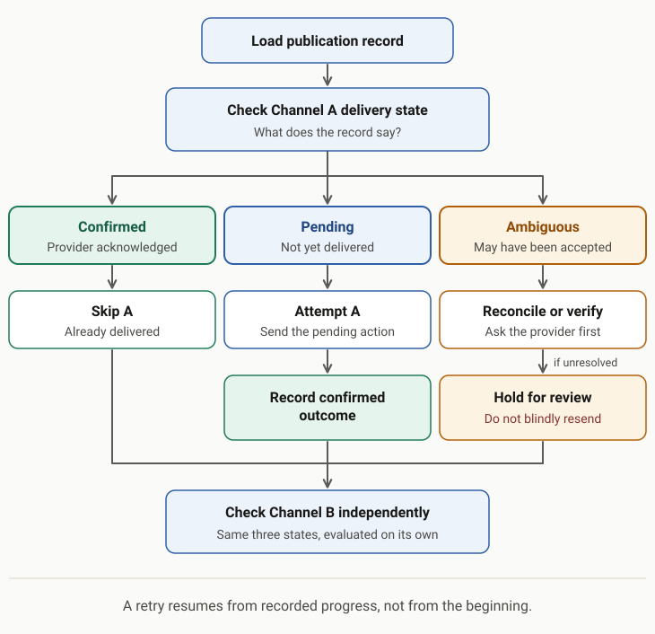
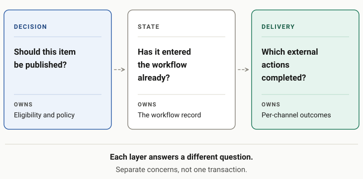

A worker times out. A request fails. A scheduled job crashes halfway through.
The instinctive fix is straightforward: run it again.
Usually that is sensible. But I ran into a complication while building automated publishing workflows for an AI news platform: a failed job isn't necessarily a job that did nothing.
That distinction matters a lot once the system starts taking actions outside its own database.
A failure after success
Imagine an automation that selects a news story, generates a short social post, and sends it to two channels.
The first channel accepts the post. Before the worker saves the confirmation, the connection drops. The worker sees an error, even though the post is already live.
Then the scheduler retries the entire job.
Now you potentially have two copies of the same post, or a successful post on one channel and a duplicate on the other.
Nothing about that failure requires an LLM. It is a distributed systems problem with an AI component attached.
Keep state outside the worker
One design choice that helped was treating the database as the source of truth, not the worker's memory.
Instead of simply selecting a story and firing off API calls, a publication can have a persistent record that represents what the system is trying to accomplish.
In my news-publishing workflow, the database tracks the story being processed, publication status, and external identifiers for deliveries. There is also a uniqueness constraint on the story identifier, which guards against creating multiple publication records for the same story.
That is useful protection. But it is important not to overstate what it guarantees.
One database record does not automatically mean one external post.
A remote API may accept an action before your application knows it succeeded. The database and the remote service cannot ordinarily commit one shared transaction.
Retry the unfinished operation, not the entire story
The practical approach is to make retries aware of progress.
Conceptually, the workflow should look more like this:

If Channel A is confirmed and Channel B is pending, retry Channel B. Do not regenerate the entire publication or blindly resend Channel A.
There is still an uncomfortable edge case: what if Channel A accepted the post, but the confirmation never arrived?
Where the provider supports an idempotency key, use it. Otherwise, recovery may require looking up the remote post, reconciling by a stable identifier, or flagging an ambiguous attempt for review rather than immediately resending it.
No amount of local retry logic can turn an unreliable external API into a perfect exactly-once system.
The LLM is only one part of the reliability problem
When people discuss AI automation failures, much of the attention goes to prompts, model quality, and hallucinations.
Those matter. But even a flawless generated post can be published twice, sent to the wrong destination, or silently skipped by a brittle workflow.
I find it useful to separate three questions:

| Layer | Question |
|---|---|
| Decision | Should this item be published at all? |
| State | Has this item already entered the publishing workflow? |
| Delivery | Which external actions actually completed? |
Each layer needs its own checks. A high-quality LLM output does not compensate for missing publication state, just as an excellent database schema does not guarantee a correct editorial decision.
The lesson extends well beyond publishing
Consider invoice generation, CRM updates, payment workflows, customer notifications, document processing, or agents that call third-party tools.
They all have some version of the same question:
What happens if the action succeeds but the acknowledgement disappears?
If the answer is simply “we retry everything,” you may have built duplicate side effects into the recovery path.
The broader principle is simple: design the retry path at the same time as the happy path.
That usually means persistent state, explicit delivery outcomes, stable operation identifiers, and a deliberate policy for ambiguous results. It also means being honest about the difference between preventing duplicate database rows and preventing duplicate real-world actions.
Retries are essential for resilient automation.
They just aren't a substitute for knowing what already happened.